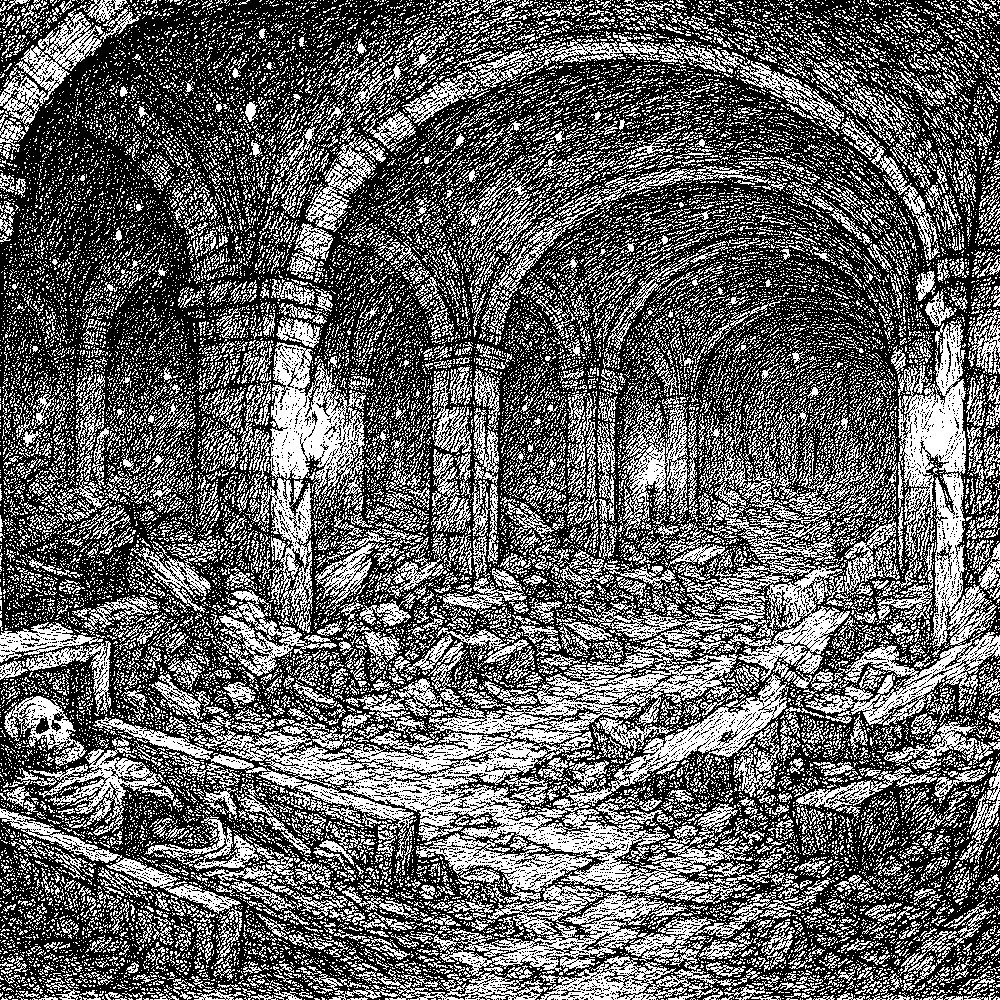
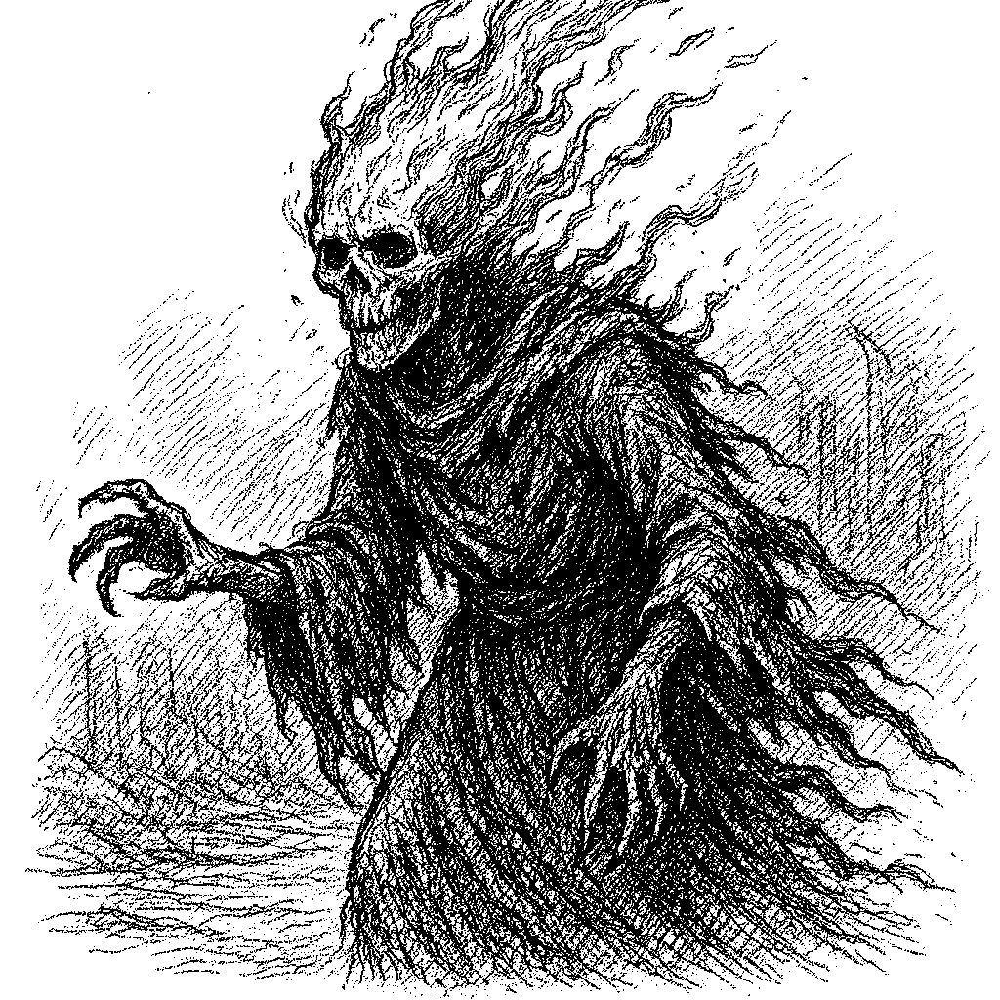

Beneath the scorched ridgelands lies a labyrinthine necropolis carved deep into volcanic stone — the Embervault Catacombs, a resting place for forgotten empires and cursed dynasties. The walls are scorched and dry, etched with crumbling sigils and ossified scripture. Embervein ore lines the ceilings, releasing a constant, eerie glow in the form of drifting sparks and ember motes. These embers drift like fireflies, but without heat — only light, flickering in patterns that many believe form words in a language long lost to man or god.
The silence here is dense and smothering. Only the soft hiss of emberfall and the occasional groan of shifting stone break the tomb's oppressive quiet. Some corridors have collapsed, others twist impossibly, as if the very layout shifts with time. Treasures lie buried with their owners, wrapped in cloth and curse, while offerings left behind by misguided looters lie untouched beside scorched boots or gnawed bones. Few enter willingly. Fewer return unchanged.
Skeletal beings cloaked in soot, animated by hatred and memory. Their bones are blackened and cracked, their armor half-melted into their frames. Ash Revenants don’t patrol — they wait. Lurking within open tombs or beneath scattered ash, they rise only when disturbed, reliving their final moments in a haze of vengeance. They burn with a hatred that doesn’t consume flesh, but hope.
Ethereal wisps of flame with vague humanoid shapes, bound to the embervein ore. They drift silently through the air or cling to the ceilings like burning bats. When angered, they erupt into bursts of radiant flame, burning soul before skin. Some believe they were once the spirits of high priests who offered themselves to the flame to preserve their kingdom's power.
Shadows given form by hatred. Bone Wraiths glide just above the floor, their skeletal forms encased in thin, cracking armor. They utter no sound, but their presence brings a cold pressure, as if the tomb itself is watching. When they attack, it’s with precise, spectral blades that leave no wound, only numbness and soul-deep fear.
Tiny, erratic sparks that flit through the catacombs like playful ghosts. Often mistaken for harmless embers, they are drawn to movement and emotion. When gathered in groups, they can disrupt magical wards, short out flame-resistant wards, or ignite volatile materials. In high enough numbers, they swirl into flame cyclones with minds of their own.